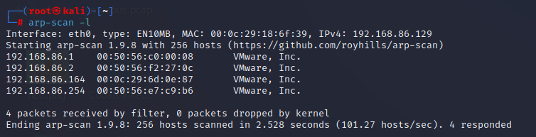
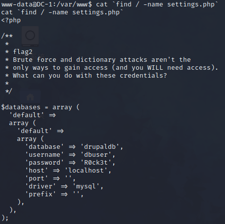

DC-1
DC系列简介原文
DC 挑战是一系列故意易受攻击的实验室，目的是在渗透测试领域获得经验。
我开始创建这些易受攻击的虚拟机，以便初学者（像我这样的人）可以了解尝试（合法地）闯入系统所涉及的内容。
当我去年年底开始做这类挑战时，我发现很多更像是拼图。虽然它们很有趣，但我也有点失望，因为我想找到一些更多的挑战……现实。这并不是说它们不好或不具有挑战性，但我确实有点厌倦了一遍又一遍地看到同样的事情。
因此，考虑到这一点，您将不会看到：
- 任何已进行 base64 编码的标志
- 任何脑残的编码标志
- 隐藏在图像中的任何“秘密”文本（隐写术）
虽然 DC-1 和 DC-2 都有提示/线索作为标志，但从 DC-3 开始，没有线索，只有一个可以通过 root 权限（直接或间接）获得的标志。
总共有 9 个 DC 版本，全部于 2019 年发布。
虽然DC系列在DC-9发布后正式结束，但我创建了一个名为Five86的新系列。
我希望你喜欢挑战，就像我喜欢创造它们一样。
感谢靶场作者
DC-1靶场渗透
0x01 靶场简介原文
DC-1是一个专门建造的易受攻击的实验室，目的是在渗透测试领域获得经验。
它旨在对初学者来说是一个挑战，但它的难易程度取决于您的技能和知识以及您的学习能力。
要成功完成这一挑战，您需要 Linux 技能、熟悉 Linux 命令行以及基本渗透测试工具的经验，例如可以在 Kali Linux 或 Parrot Security OS 上找到的工具。
有多种方法可以扎根，但是，我包括了一些包含初学者线索的标志。
总共有五个标志，但最终目标是在 root 的主目录中查找并读取该标志。您甚至不需要是 root 用户即可执行此操作，但是，您将需要 root 权限。
根据您的技能水平，您也许可以跳过查找大多数这些标志并直接进入root。
初学者可能会遇到以前从未遇到过的挑战，但谷歌搜索应该是获得完成此挑战所需的信息所需的全部内容。
0x02 环境搭建
本次环境为NAT下
攻击机为kali，IP：192.168.86.129
靶机镜像下载
用vmware打开即可，会提示导入失败，点重试就行，打开到此界面就ok了
目标：总共有五个flag，但最终目标是在 root 的主目录中查找并读取flag。您甚至不需要是 root 用户即可执行此操作，但是，您将需要 root 权限。
0x03 信息收集
1.扫描192.168.86.0网段下存活主机
kali下使用arp-scan -l命令查看同网段下存活的主机

这里也可以使用nmap
1 | |
也可以使用netdiscover -i eth0命令，但是有点慢
.1是我的主机，.2是网关，254是DHCP服务器(ipconfig /all查看VMnet8的)，那只能是192.168.86.164了，或者查看DC-1的mac地址，也能确定
2.探测开放端口
这里使用nmap
1 | |
- -sS 半开扫描(TCP SYN扫描)，执行速度快，不容易被注意到，可以避免被记入目标系统的日志，需要root权限。它常常被称为半开放扫描， 因为它不打开一个完全的TCP连接。它发送一个SYN报文， 就像您真的要打开一个连接，然后等待响应。

可以看到，22和80是开放的，应该是突破口
3.访问web页面

通过插件可以看到，网站的cms是Drupal 7
这里可以用御剑扫一下目录，有robots.txt，index.php和install.php，用处不大
也可以用goby等等扫一下，这里goby给出了一个sq注入(CVE-2014-3704)，通过该漏洞，攻击者可以执行任意SQL语句，插入、修改管理员信息，甚至执行任意代码。
0x04 渗透
1.寻找切入点
有cms肯定从cms下手，打开kali的msfconsole模块，寻找Drupal相关exp
1 | |

2.漏洞利用
选新且rank高的
1 | |
Current Setting是目前设置的情况
Required表示是否需要设置内容，yes为必须设置，no为非必须
就上面来说RHOSTS(Remote host远程主机，即靶机)需要设置
1 | |
可以再检查一下设置成功没，然后开始漏洞利用，这里run和exploit是一样的

直接拿shell吧，看一下权限，是www-data

看佬们的笔记，都选择了用交互式shell，跟个风吧，kali上执行以下命令：
1 | |
出现交互式shell：

找找flag吧
先看一下当前路径pwd(Print Working Directory)，然后看看根目录，但是并没有flag，直接看当前目录下的文件，发现flag1.txt

打开看看
每一个好的CMS都需要一个配置文件-你也是
提示配置文件，网上找drupal配置文件位置
作为一个高端的大黑客，我是不可能一点一点进入路径的：
1 | |

蛮力和字典攻击不是获得访问的唯一方法(您将需要访问)。您可以使用这些凭据做什么？
还给了mysql的用户：dbuser和密码：R0ck3t
应该是要我们拿到数据库管理员的权限
3.渗透数据库
登录看看
1 | |

drupal 框架默认的用户表就是 user表，所以在选定数据库后，直接查users表
有admin的账户和密码
drupal 5、6都是用MD5加密的，但是自从 7.0之后，因为安全性的问题将加密方式改成了hash加密SHA-512(SHA2)，这里使用的应该是自定义的加密方式。
由于前面提示，暴破是不可行的。两个思路，要不再新建一个管理员账户，drupal7版本在有个SQL注入的漏洞，可以添加一个admin权限的用户，适用版本7.31以下，可以在msf找一下这个工具
1 | |
找到Add Admin User的python脚本，然后查看一下脚本路径
1 | |
可以通过访问url下载脚本使用，或者本地就有这个py脚本，直接用也行
1 | |
运行后，就会创建一个新的管理员账户
要不把现有的admin账户的密码改了，找到加密文件，**/var/www/scripts/password-hash.sh**，打开发现是php写的
注：linux中.sh文件是脚本文件,一般都是bash脚本。
执行命令，希望把密码改成wander，用脚本给出加密后的密码
1 | |
看一下当前用户权限
1 | |
All/All Privileges代表全局或者全数据库对象级别的所有权限，改两个账户的密码不在话下
1 | |
密码全改了，去web端登陆一下
在content界面找到了flag3，perms是指权限相关的东西，-exec是find命令的一个选项。flag3提示要看/etc/shadow文件，但只有root才能查看，并且还是加密后的密文，提权看也不一定能看出来密码，所以换个思路
我们渗透测试获取shell之后，这三个文件必看：/etc/passwd, /etc/group和/etc/shadow
果然有所收获，在/etc/passwd中找到了flag4这个用户
去flag4用户的目录下看看，发现有flag4.txt，打开看看
Can you use this same method to find or access the flag in root?
Probably. But perhaps it’s not that easy. Or maybe it is?
“你能用同样的方法找到或接触到root下的flag吗”
“可能吧，但也许这并不容易。谁知道呢”
不管了，先梭哈
用hydra暴破一下flag4的用户
1 | |
| 参数 | 说明 |
|---|---|
| l | 指定登陆用户名 |
| L | 用户名字典 |
| p | 指定密码 |
| P | 密码字典 |
| V | 显示每一组user/password情况 |
| f | 暴破成功停止暴破 |
拿到密码orange，刚好22端口开放，可以
1 | |
比如ssh flag4@192.168.86.164
但如果你使用hydra，指定端口的参数是-s
这里就不演示了，该拿flag5了
4.Linux find提权
Why find
查看具有root用户权限的SUID文件
1 | |
发现/usr/bin/find，就用find吧
基础知识
Linux文件普通权限
r(read)读，数字表示：4
w(write)写，数字表示：2
x(execute)执行，数字表示：1
Linux文件特殊权限
linux文件的三种特殊权限分别是：suid权限、sgid权限、sticky权限；其中suid权限作用于文件属主，sgid权限作用于属组上，sticky权限作用于other其他上。
suid：作用：让普通用户临时拥有该文件的属主的执行权限，suid权限只能应用在二进制可执行文件（命令）上，而且suid权限只能设置在属主位置上。
suid权限使用s表示，增加权限u+s，移除权限u-s；
suid权限也可以使用数字形式表示，0表示去除suid权限，4表示添加suid权限，而且是在原权限的数字表达形式开头加0或4，如：0755移除suid权限，4755添加suid权限。
例如：普通用户执行执行passwd命令时需要去修改/etc/shaow等文件，但ll /etc/shaow发现该文件没有任何权限，即普通用户对/etc/shaow文件是没有写入权限的，所以普通用户是怎么实现成功修改自己的密码的呢？答案是临时拥有了root权限（root超级管理员可以对任何文件进行修改）来实现密码的修改，suid权限只能应用在二进制可执行文件上。
添加和去除suid权限：
suid权限的去除可以使用数字或字母的形式添加，如果使用数字，0表示去除权限，4表示添加权限，而且是在原权限的数字表达形式开头加0或4，字母形式下，suid权限使用s表示，增加权限u+s，移除权限u-s；

现在成功赋予find命令suid，可以进行提权了

翻车了
这里的坑就在于，利用find的exec执行命令，执行是以root的权限执行，之后却是低权限。原因在其id上可以发现。
划重点：默认情况下 bash 在执行时，如果发现 euid(effective有效uid) 和 uid 不配，会将 euid (即 suid) 强制重置为uid
因此需要用到参数： -p
1 | |
可以看到，象征root的#已经显示出来了，且此时euid为root
此时反弹的shell就是root权限了
好，那么好，演出开始
刚刚的演示是在我的虚拟机中进行的，但是到DC-1的shell中提示非法参数p，这里应该不需要-p。；
bash也不让用，问题不大，#还是得出来

congratulation！！！
0x04 致谢
1.CSDN博主「MssGuo」的原创文章
2.今天也要学安全的原创文章
3.CSDN博主金 帛的原创文章
4.CSDN博主0x010的原创文章